ПРО ИНСТРУМЕНТ
The right bullets
Скажи мне, чем ты рисуешь, и я... нет, не так. Скажи мне, чего ты хочешь, и я скажу, чем тебе рисовать.
Пресловутый стиль — это в значительной степени выбор инструмента. Это хорошо знают каллиграфы (о чем вы прочтете по соседству) — собственно, для них выбор инструмента это все, кисть/перо/резец диктует форму и наклон штриха, а значит и весь характер надписи. Говорят, в хорошей типографике всегда виден след каллиграфического инструмента. Спрашивается, чем мы хуже.
Это не проблема, если делать иллюстрацию на бумаге, но в цифровой графике нужно прилагать отдельные усилия, чтобы сохранить генетический отпечаток живого рисования.
Jonathan Edwards — вроде вектор вектором, а живой — по скетчам отлично видно как складывается форма линии.
Jonathan Edwards
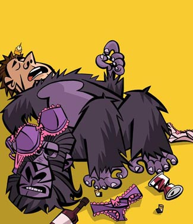
Я в этом смысле плохой пример, на заказ я рисую сразу на вакоме — он позволяет увереннее расчитывать и экономить время, но это только потому, что я за двенадцать лет так и не наработал безопасных техонлогий, позволяющих сделать иллюстрацию на бумаге меньше, чем за неделю. Для души при этом я рисую ручкой. И если в фотошопе у меня ощущение —тоже, впрочем, страшно приятное — как будто режу ножом некую упругую субстанцию, то от ручки — как будто катаюсь на коньках (я, правда, никогда в жизни не катался на коньках).
За что, кстати, не люблю пейнтер — он располагает к рисованию жирным пальцем, и ощущения от него соответствующие. Он в этом смысле даже слишком хорошо передает масляность масла. Бумага, в отличие от пейтнтера, стерпит не все, и настоящее масло бесконечно себя зализывать не позволит. Слишком многие попались в эту ловушку, но это, конечно, не совсем проблема пейнтера - тем более что в нем вон какие можно делать вещи:
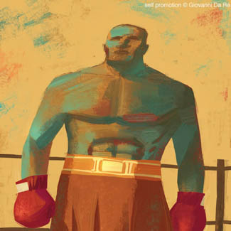
Все-так главное и изначальное его назначение — имитация живых инструментов. Фотошоп в этом смысле честнее и потому симпатичнее, но и он любому живому инструсменту проиграет всухую. Лорензо Маттотти — в следующий раз про него одного вывешу.
Лорензо Маттотти
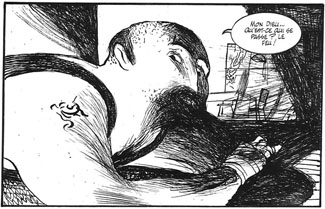
Ральф Стедман о Зигмунде Фрейде (тут, кстати, не все - кто-нибудь знает, где остальное есть?)
Ральф Стедман
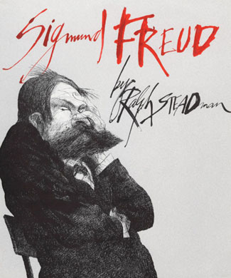
вообще чрезвычайно полезное сообщество all_drawings. Оттуда же:
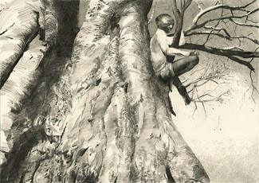
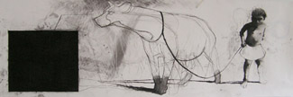
У каждого инструмента есть свой звук и свое ощущение в пальцах. Уголь например — это баритон-саксофон, и ощущение от него должно быть такое, как если запустить руку в трехлитровую банку с гречкой.
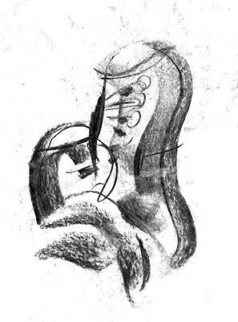
Артем Крепкий — скоро всех уберет.
Артем Крепкий
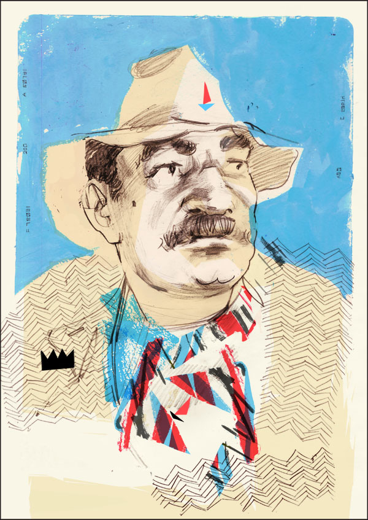
Эти тактильные ощущения исподволь, но верно передаются зрителю. Вот Макс Покалев умеет ими работать как цветом, причем откуда-то берет совершенно новые. Молекулярная кухня. Это, кажется, процарапанная иголкой пастель.
Макс Покалев
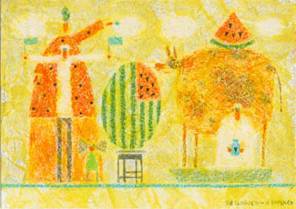
Так вот, собственно об инструментах. Чем вы рисуете, коллеги? Интересно.
Я вот:
Stabilo liner 808
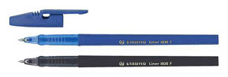
Долго выбирал и выбрал, по мне из дешевых ручек удобнее и красивее нет, а дорогими я не интересовался. Также имею цанговый карандаш "cretacolor ecologic", 5,6 мм: по форме похож на ножку рояля, но в руке лежит идеально, приятно тяжеловат и шершав.
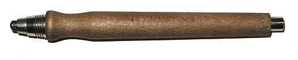
К слову, прочитал намедни в журнале Русский Репортер о необыкновенной ручке под названием Big Revolution, со специальным рычажком, который при нужде выстреливает выразительную кляксу — какое счастье-то, а?
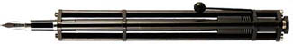
Я уже думал, заведу себе такую и буду как Стедман. Но это оказалось, увы, неправдой - по крайней мере, собственный сайт производителя и весь остальной интернет об этом глухо молчат.
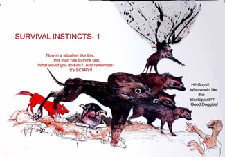